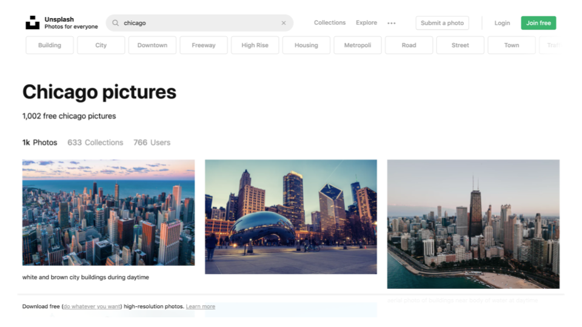
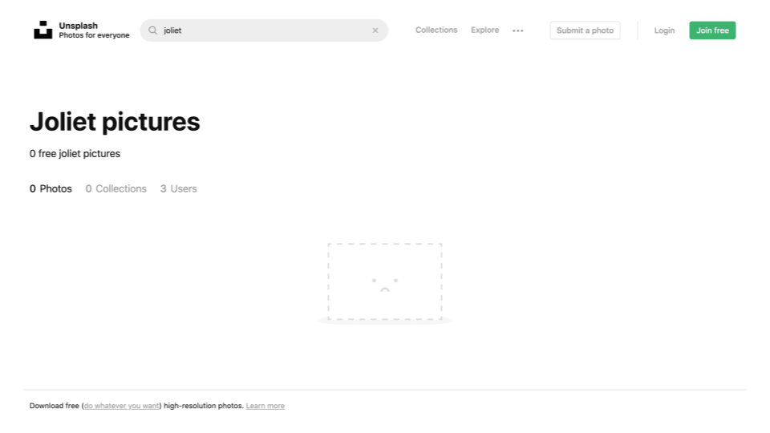
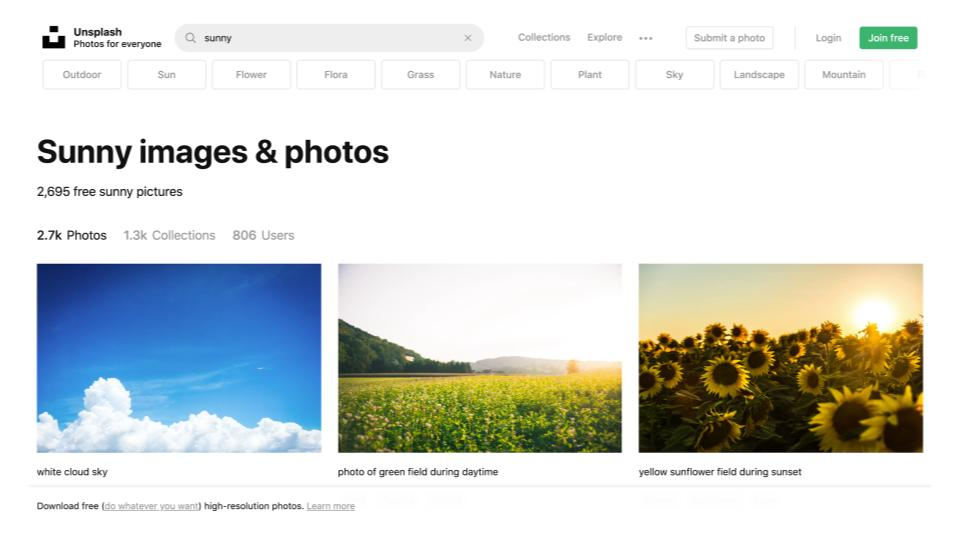

FancyWeather
Role: Designer, Developer
An open-source Heroku application which gives weather information and pulls corresponding images via Unsplash API.
The Problem
The end goal with this project was to create a Heroku app which delivered accurate, location based weather information and provided visitors with a unique experience. This site also needed to be able to access and properly utilize the Unsplash API.
The Users
There were no specified users and there was no audience we were particularly trying to reach or identify with for this application.
As such we aimed to include as many users we could and incorporate everyone into the design of the application. We accomplished this by incorporating features such as the City/ZIP search, in the instance that the approximate location identified by the user's IP address didn't match their exact city.
Furthermore, the site was built to display background images based upon the weather conditions rather than location for fear of leaving out visitors living in less photographed areas.
- 
- 
When choosing by location, we either had thousands of photos to choose from... or none at all in less popular locations :(

- 
With weather-based photos however, we always had plenty to use
The Solution
The creative process began on Dribbble and seeing what people had and hadn't done with weather applications. The search not only gave inspiration on what direction to take the site, but also revealed how we could differentiate ourselves from other similar projects.
We identified that photography was not a prominent feature in other projects, which had instead opted to use illustrations and gradients for their backgrounds, similar to the stock Apple weather app.
What a quick Dribbble search result for "weather" came back with
Kyle Hall, another Showpad intern, worked to incorporate the Unsplash API and perform all the necessary calls across the various other APIs and library's necessary for the application to run and query the appropriate data.
The information displayed on the page is relatively dense and as such we opted to prioritize visual hierarchy and opted for a font with various weights, to better break up the text and enforce the hierarchy via weight, in this case Montserrat.
We used smaller, lighter elements to signal less important data, such as the humidity, whereas larger thicker elements are the most immediately important to the visitor ie. the current temperature outside.
The front-end markup of the site contains a variety of flexboxes, lists, absolutely positioned elements, and empty HTML tags which are then dynamically populated through a series of AJAX calls.
After linking a GitHub account to Heroku, the process was surprisingly simple and allows for the site to update after each and every git push and within a few minutes our project was live for the world (or at least our parents) to see.
The Result
At the end of a single day we were left with a project that we were both very proud of and had tons of fun building out.
The final result of our efforts can be viewed here at fancyweather.herokuapp.com. I'd invite you to go ahead and refresh the page a couple of times, Unsplash hosts some *beautiful* photos.
Just one variation of what we ended with. Go try it for yourself! 👀
Back Home